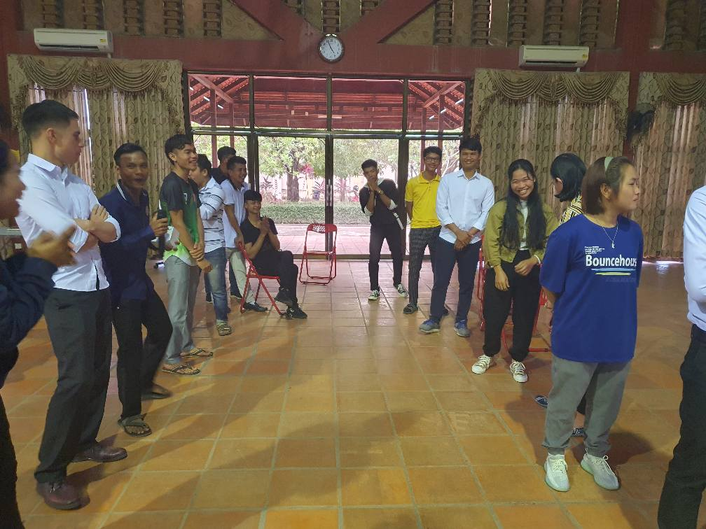
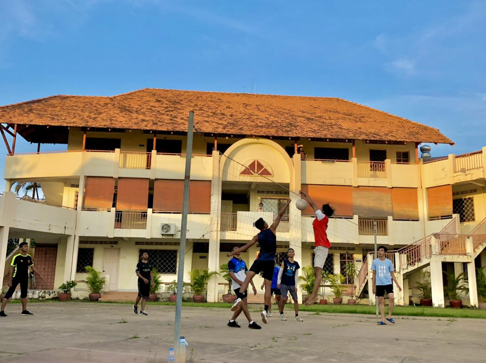
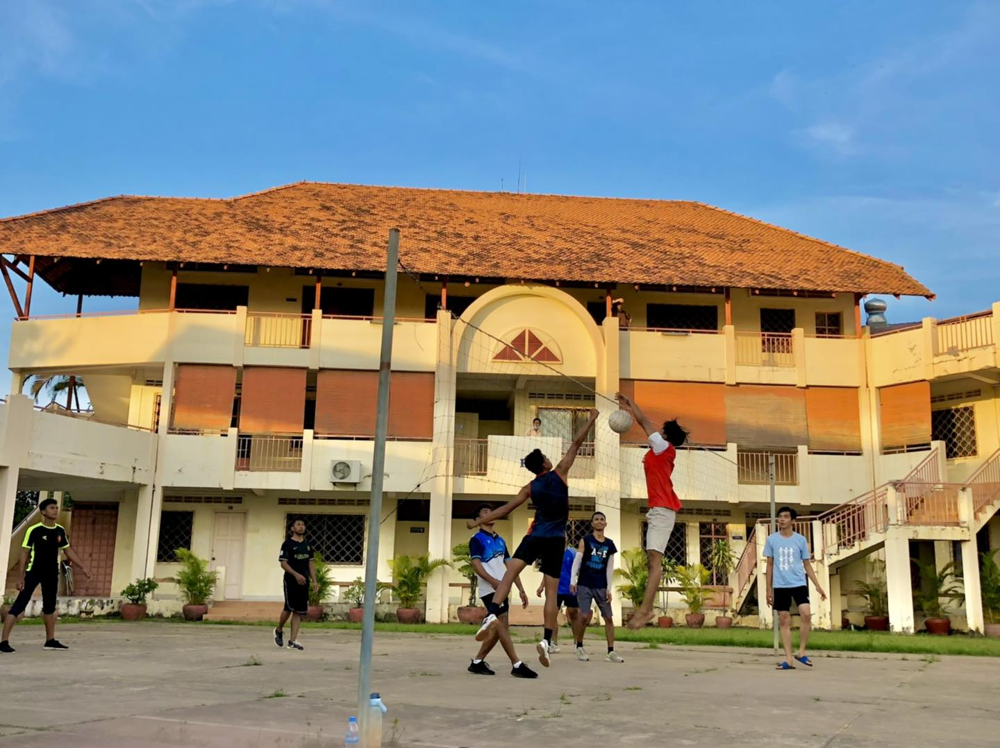

Christ will build his Church
Dear Brothers and Sisters in Christ, 
Thank you as always for your prayers and constant support. It has been a full, and a fast, three months since our last update.
Here are some highlights:
PPBS
A new school year started in January. At first there was some concern among the school staff and administration, because they were only two students registered for the incoming class initially, but several more students trickled in as the first week of classes began, to where there ended up being a fairly large admission. Of course our goal and metric for “success” should never be numbers, but at the same time it was great to see new students arrive and excited to study God’s Word as they prepare for ministry.


This semester Ryan is teaching three classes: Hebrew, Isaiah, and Global Missions. It has been a bit much sometimes preparing for three new classes, but at the same time it has been a great blessing to have dedicated, focused time to prayerfully work through these topics in preparation for lectures. It has also been encouraging to see the students engage with the content. In the missions course in particular, which is a fourth year ministry class, it has been so good to see the students really wrestle with the Great Commission, what it means for us as the Church, and how that looks in a Cambodian church context.
 My particular emphasis has been on showing the plan of God from Genesis to Revelation to save the nations, and how the Church fits within that. All of this moving towards the inescapable conclusion that the Great Commission is the task that all of the Church has to have a part in, though the specific role that each of us plays looks differently from person to person according to gifts, opportunities, etc. Something that the Cambodian church wrestles with is the tension with wanting to focus inwardly on very real problems or areas of growth in one’s own church, but at the same time not neglecting Christ’s command to make disciples in all the nations. It is exciting to see students express their desire to join in the great work that Christ has left us and their thoughtfulness as we wrestle with philosophy of ministry/logistical issues along the way.
My particular emphasis has been on showing the plan of God from Genesis to Revelation to save the nations, and how the Church fits within that. All of this moving towards the inescapable conclusion that the Great Commission is the task that all of the Church has to have a part in, though the specific role that each of us plays looks differently from person to person according to gifts, opportunities, etc. Something that the Cambodian church wrestles with is the tension with wanting to focus inwardly on very real problems or areas of growth in one’s own church, but at the same time not neglecting Christ’s command to make disciples in all the nations. It is exciting to see students express their desire to join in the great work that Christ has left us and their thoughtfulness as we wrestle with philosophy of ministry/logistical issues along the way.
Please pray for this class in particular, that students (and the Cambodian church overall) would grow more and more burdened for the Great Commission, willing to sacrifice the things of this world and seek His Kingdom first.

The Cambodian church also celebrated 100 years of Gospel witness in Cambodia in January. Praise God for His faithfulness and for Christ’s promise that He is building His Church.
As is the case around the world, the Cambodian church has its fair share of challenges and threats both internal and external. However, we press on knowing that in the end the battle has already been finished at the cross, Christ has won the victory over the grave, and He has not left the future of His Church in our hands.
 PPBS Library
PPBS Library
This semester we’ve had a little more flexible time than last semester as well, and are trying to spend more time with students when possible. It has been great to have more opportunities to get to know them and their hearts for ministry. Ryan has been able to visit some of the students’ churches as well. Our hope is to build long lasting relationships with students so that, as they launch out after graduation, we will be able to continue to provide guidance and support to their churches as needed.
 Getting ready for our annual sports day

Getting ready for our annual sports day

 Samuel Helping getting things setup
Samuel Helping getting things setup

Church Life
The past few months have been eventful at church with celebrations, get-togethers, trips and sports ministry events. Although not directly involved in all of the above, we have been able to enjoy time with our church family and appreciate the hearts of those who seek to serve Christ.

A couple of particular areas of thanksgiving:
- Ryan has been able to join a few sports ministry events to encourage and serve. We are particularly grateful for our church’s heart to reach the lost in our community. Ryan has also been blessed to spend more time with church members who are involved in this ministry.
- Rebekah (and Anna) joined a women’s trip to a beach town in Cambodia. It started with the elderly ladies who wanted to take a trip together and expanded as they scouted the younger ladies to accompany and assist them. It was a gift for Rebekah to be asked to go (even though she was the only one who brought a child and wasn’t much help) and enjoy time together. Please pray that there would be much fruit from these relationships in Christ.
- Sunday school teaching for Rebekah has been challenging, but God has proven Himself again and again to be faithful in it all. Between feeling less than confident in her Khmer speaking and our own children acting up significantly more during her lessons on Sundays, Rebekah has been reminded of the power of the Word (2 Tim. 3:16, Heb. 4:12), the work of the Holy Spirit (Titus 3:5, John 14:26) and Christ’s word that He would build His church (Matthew 16:18). Overall, she has been blessed greatly and we pray that the children will be pointed to Christ.
Another specific prayer request would be for the leadership in our church which has been undergoing changes and challenges for a while now. We trust God’s plan for it all is good and we pray that the church will be strengthened and even further united despite the rockiness.
ACTION
- The ACTION Cambodia Translation continues to grow and is always busy with new projects. Praise the Lord for continued funding and support from organizations such as Desiring God, 9Marks, and Ligonier. We are continuing to find ways to strengthen the connection between the Phnom Penh Bible School (which both requires more resources for use in classes and produces lots of material through student papers and content that professors prepare) and the Action publishing team.
- We also had a baptism in the team! The youngest son of the Becks was baptized over Christmas.
Outlook for next few months
In April, Ryan will be visiting Ratanakiri again for another training. It’s hard to believe it’s nearly been six months since we went last time! For this session, we will be going through Romans 9-11. We’re not sure yet if Rebekah and the kids will be able to come along or not yet.
One of the things we appreciated last time we went was the camaraderie there was between teachers and mutual encouragement shared between the pastors and other students who attended. Pray for a profitable time for the students and teachers alike.
The Spring semester ends in May. Next semester Ryan will have a little bit of a lighter classload, and so hopefully we will have more time to work on resource development.
Updates on Family
- Jonathan will be turning five in April, and Samuel will be turning three!
Prayer Requests
Please pray for:
- The Bible School students, their passion for Christ and for His name to be glorified among the nations.
- Our local church, wisdom for leadership, unity in the body and growth in love for Christ.
- The Action translation team, encouragement in long, difficult, and often discouraging work.
- Our neighbors, that their hearts would be open to the Gospel.
For His glory,
Ryan and Rebekah